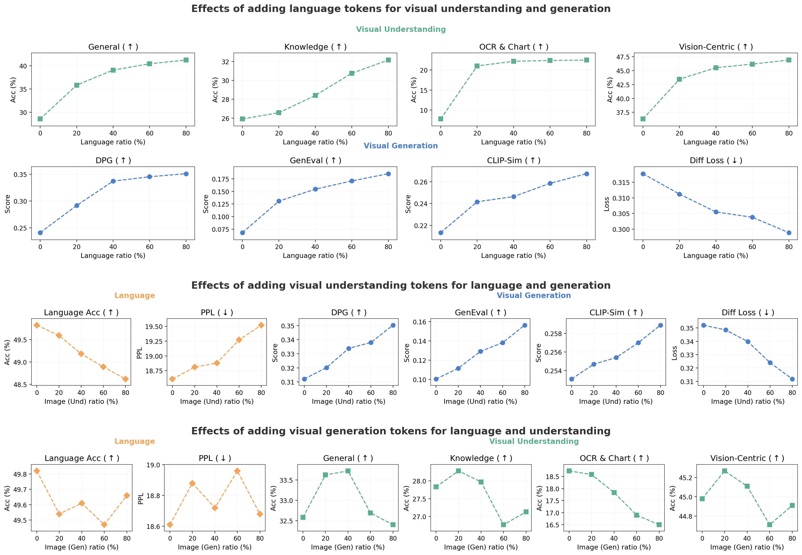
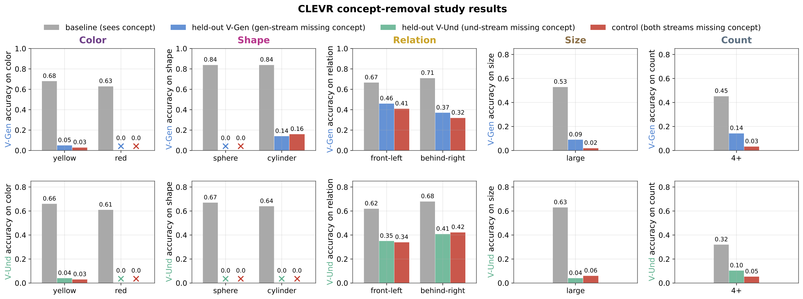
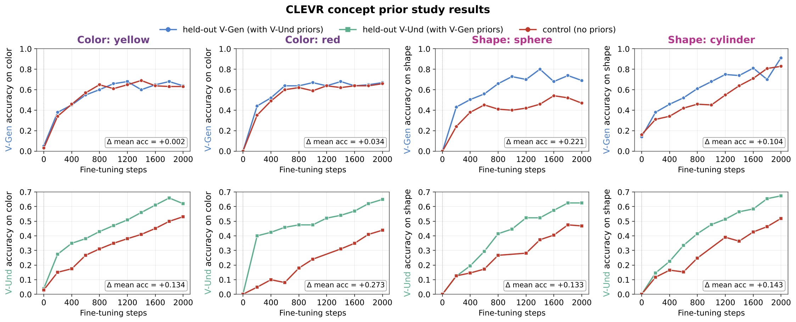
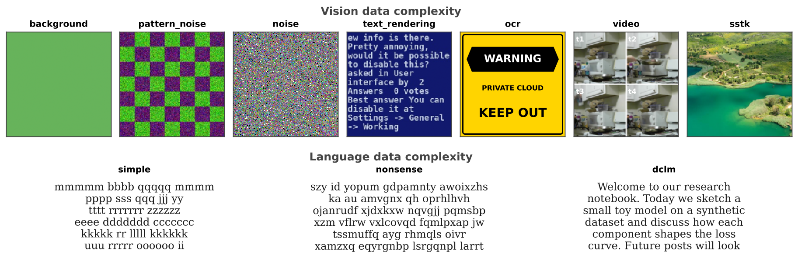
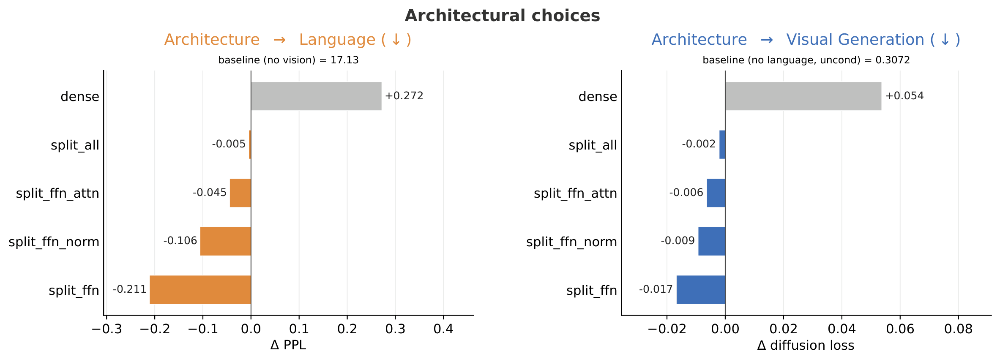
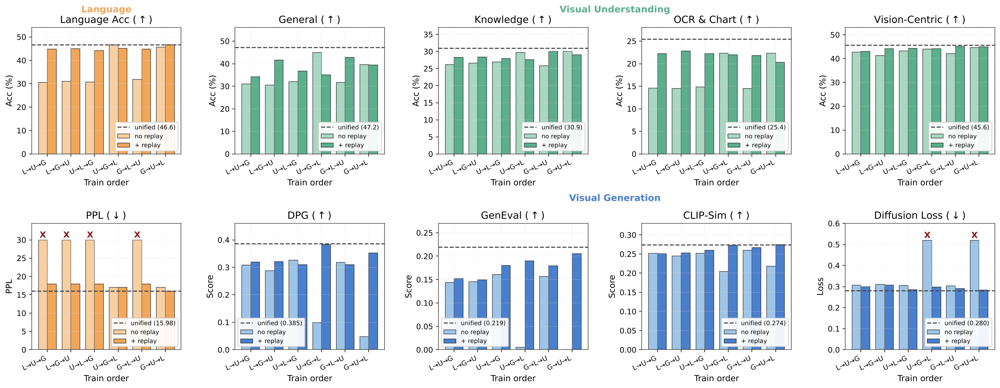
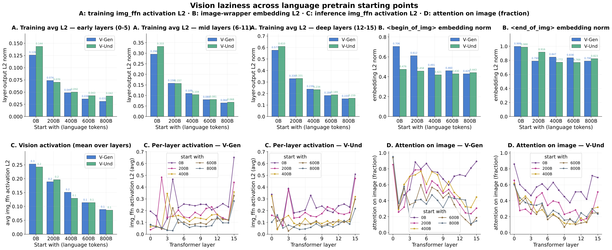

1
1
1. Demystifying Modality Knowledge Flow
How does knowledge move between language, visual understanding, and visual generation in a unified network? By executing controlled mixture experiments, we demonstrate that modality knowledge transfer is fundamentally asymmetric and concept-dependent.
Our real-world data sweeps reveal that language serves as a universal booster: increasing language data consistently improves all visual understanding and generation metrics. Visual understanding also acts as a powerful prior that significantly boosts generation performance. However, the reverse path is neutral—scaling visual generation data yields minimal backward transfer to language or understanding tasks.

Asymmetry in real-world modality transfer. Scaling language data (top) or visual understanding data (center) provides cross-task boosts to visual generation, whereas scaling visual generation data (bot) offers a highly stable, neutral effect on other tasks.
To isolate these dynamics from data confounders, we developed a controlled concept-removal study using synthetic CLEVR environments. This study demonstrates that transfer dynamics are concept-dependent:
- Low-level attributes (Color, Shape): Zero-shot transfer fails entirely in both directions. These visual vocabularies must be explicitly learned within each task. However, generative training establishes fine-grained visual priors that significantly accelerate subsequent understanding recovery during fine-tuning.
- High-level structural concepts (Relation, Size, Count): High-level spatial and compositional structures transfer effectively from understanding to guide the zero-shot generative process.



Concept-dependent transfer on CLEVR. The pipeline (top-left) filters target concepts from training streams. Zero-shot evaluations (top-right) reveal asymmetric transfer of structural concepts. Prior curves (bottom) show generative training accelerates subsequent concept recovery.
Takeaway 1: Modality transfer is asymmetric. Visual understanding acts as a strong prior for generation, but generative training primarily contributes to understanding by accelerating low-level concept acquisition during fine-tuning, rather than through direct zero-shot transfer.
2. Modality Synergy vs. Competition
Whether modalities cooperate or compete during unified training depends heavily on two critical factors: task complexity and parameter-sharing strategies within the network.
We systematically evaluated how varying the complexity of one modality impacts the performance of another. We discovered that simple, low-entropy tasks act as cross-modal boosters (e.g., pairing language with solid color backgrounds or noise actually lowers language perplexity compared to text-only training). However, as visual tasks scale up in semantic complexity and entropy, capacity competition dominates, causing performance tradeoffs in dense shared parameters.



Complexity and Architecture. Data progressions (top) range from solid colors to natural images. Simple visual tasks act as boosters, whereas complex distributions lead to capacity competition (bottom-left). Modality-specific FFN layers mitigate this competition (bottom-right).
To preserve cross-modal synergy while eliminating parameter competition, we evaluated five parameter-sharing configurations in standard transformer blocks. The optimal design relies on:
- Shared Attention and Normalization: Acts as a representational bridge, allowing different modalities to contextualize and align their feature scales in a shared space.
- Decoupled Feed-Forward Networks (split_ffn): Mitigates capacity competition by giving each modality specialized parameter capacity to process its distinct computational demands.
Takeaway 2: Architecture dictates modality synergy. To prevent capacity competition while leveraging shared representations, use shared attention mechanisms paired with decoupled, modality-specific feed-forward layers.
3. The Necessity of Early Unification
We challenge common late-fusion heuristics that pretrain language models first and align visual capabilities post-hoc. Our temporal and sequential scheduling experiments show that simultaneous joint training from the very early stages of pretraining is essential to prevent a phenomenon we call vision laziness.
When the language trunk is allowed to harden before vision is introduced, the model learns to rely heavily on pre-existing language priors rather than fully engaging its visual pathway. This "laziness" leaves visual representations under-developed and disconnected from the language manifold.



Unification Timing and Dynamics. Delaying visual unification degrades both visual understanding and generation (top). Simultaneous joint pretraining dominates sequential configurations (bottom-left). Delaying integration causes "vision laziness" characterized by inactive vision-branch computations (bottom-right).
We analyzed the mechanics of vision laziness across four independent axes, demonstrating how late alignment fundamentally alters the internal representations of the model:
Axis 1 Training-time Activation L2 of img_ffn
The L2 norm of the image-side feed-forward branch outputs consistently decreases as the language warm-up is prolonged. This indicates that the vision-specific feed-forward layers become progressively "quieter" and contribute less to the representations.
Axis 2 Embedding L2 Norm of Special Image-Wrapper Tokens
The embedding magnitudes of special segment tokens (such as begin_of_img and end_of_img) shrink in late-aligned models. This demonstrates weaker integration into the dominant language vocabulary space.
Axis 3 Inference-time Per-Element Activation of img_ffn
Measuring the output magnitude during live visual tasks reveals a drastic drop in active computation within the visual branches for models trained with a longer language-only phase.
Axis 4 Inference-time Attention on Image Tokens
The share of attention heads focused on image-patch queries drops sharply during generation and understanding in late-aligned models, showing an over-reliance on surrounding text context over visual tokens.
Takeaway 3: Modalities must actively co-evolve. Sequential pretraining schedules fail to prevent representation shortcutting. Early joint pretraining is a structural necessity to ensure visual pathways are fully integrated.
4. Designing Unified Pretraining Recipes
Integrating our insights on knowledge flow, modality synergy, and early unification, we construct efficient pretraining recipes. Since visual generation data has minimal backward transfer to understanding or language, a highly asymmetric, generation-light data budget is optimal.
Our grid search identifies a highly efficient recipe allocating 70% language, 25% visual understanding, and only 5% visual generation (L70/U25/G5). This mixture maximizes language preservation and visual understanding performance, while achieving high-quality generative capabilities.

Visual generation is highly data efficient. Restricting visual generation to just 5% of the token mixture boosts downstream VQA capabilities while simultaneously reaching optimal visual generation evaluation scores.
Furthermore, we propose a dynamic curriculum: models should first consolidate core language and visual understanding priors under a generation-light mixture, then progressively increase the generation share over training to translate these foundational priors into strong generation skills.
We validated these design choices at scale by training a 13.5B Mixture-of-Experts (MoE) model on 2T tokens. The optimized, highly asymmetric recipe significantly outperforms balanced baselines, demonstrating a highly efficient path to unified multimodal modeling.

Validation at 2T tokens. The 13.5B MoE model trained with our optimized asymmetric recipe achieves simultaneous gains across language reasoning, VQA (visual understanding), and image generation (CLIP similarity and GenEval).
Takeaway 4: Efficient unified multimodal pretraining relies on asymmetric data allocation. Skewing the budget toward language and understanding (e.g., L70/U25/G5) paired with MoE scaling minimizes capacity waste while maximizing cross-modal transfer.
Citation
@article{han2026towards,
title={Towards Physics of Multimodal Pretraining: Knowledge Flow, Modality Synergy, Early Unification, and Recipes},
author={Han, Junlin and Tong, Shengbang and Fan, David and Torr, Philip and Kokkinos, Filippos and Lewis, Mike},
year={2026}
}